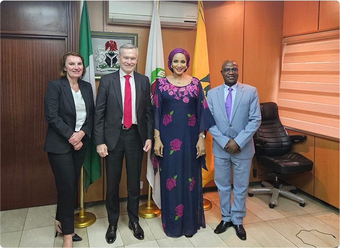

Quick Facts
| Name: | Bianca Odumegwu-Ojukwu |
| Bio: | Distinguished lawyer, diplomat, and political leader serving as Honourable Minister of State for Foreign Affairs of the Federal Republic of Nigeria. |
| Born: | August 5, 1967 (Enugu State) |
| Education: | University of Nigeria (UNN), Nsukka; Universidad Alfonso X El Sabio, Spain; University for Peace, Costa Rica; Berg Institute, Madrid |
| Sworn In: | November 4, 2024 |
| Speaks: | English, Igbo, Spanish |
Her Excellency, Ambassador Bianca Odumegwu-Ojukwu, born on August 5, 1967, is a distinguished lawyer, diplomat, and political figure. She currently serves as Honourable Minister of State for Foreign Affairs of the Federal Republic of Nigeria, having been appointed to the role on November 4, 2024.
Her extensive academic background, diplomatic service, and political leadership have made her a respected voice in international relations, diaspora engagement, and national development across Africa and the world.
A multilingual diplomat fluent in English, Igbo and Spanish, Ambassador Odumegwu-Ojukwu has represented Nigeria at the highest international levels — including as Ambassador to the Kingdom of Spain and Nigeria's Representative to the United Nations World Tourism Organisation (UNWTO) from 2012 to 2015.
Since her appointment, she has been instrumental in driving Nigeria's citizen-centred diplomacy, championing the rights and welfare of Nigerians in the diaspora and strengthening the Ministry's engagement with international partners across Europe, the Americas and the Spanish-speaking world.
Discover Nigeria's diaspora engagement initiatives, citizen-centred services and the Ministry's commitments to Nigerians living and working abroad.

Nigeria is a significant player on the international stage, maintaining a vast network of diplomatic missions worldwide.
See More